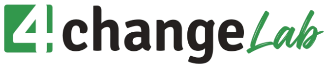
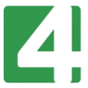

Programy szyte pod cel organizacji — z ćwiczeniami, symulacjami i grą jako narzędziem nauki.
Każdy temat prowadzimy stacjonarnie i online, w formacie dopasowanym do zespołu.
Badamy potrzeby, projektujemy program i dobieramy narzędzia — od ćwiczeń po pełną symulację.